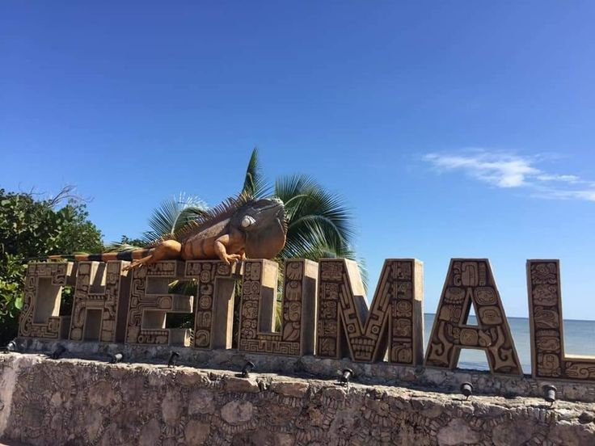
Chetumal, capital de Quintana Roo, es una ciudad que combina historia, cultura y naturaleza. Con su bahía y cercanía a Belice, es considerada la puerta de entrada al Caribe mexicano
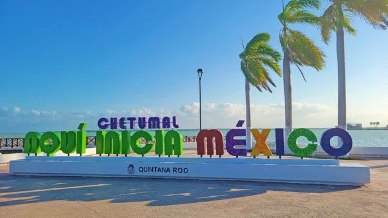
Fundada oficialmente en 1898, Chetumal fue clave en la defensa del territorio mexicano frente a conflictos con Belice. Es conocida como la “cuna del mestizaje” por el encuentro cultural entre mayas y europeos.
Se encuentra en el sureste de México, a orillas de la Bahía de Chetumal y muy cerca de la frontera con Belice.
Es una ciudad tranquila, con un malecón que bordea la bahía, museos, parques y una mezcla cultural única.
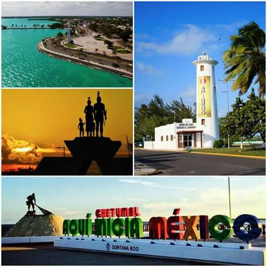
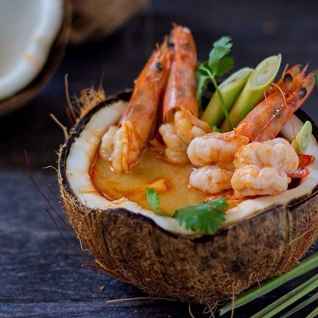
•Ceviche de caracol
•Arroz con flijoles
•Pan de coco
•Tamales de masa colada
Influencia maya, mestiza y caribeña. Se celebran festivales culturales y carnavales con música, danza y artesanías.
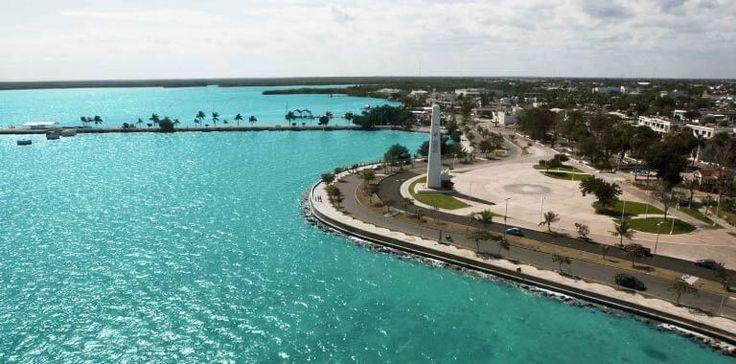
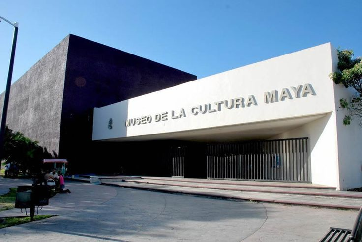
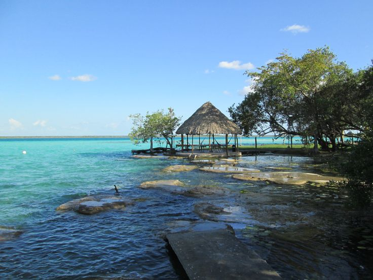
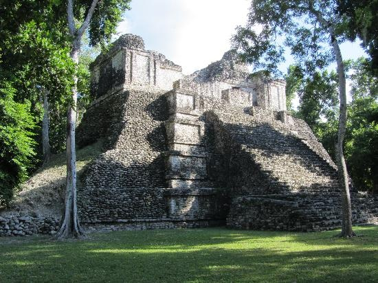
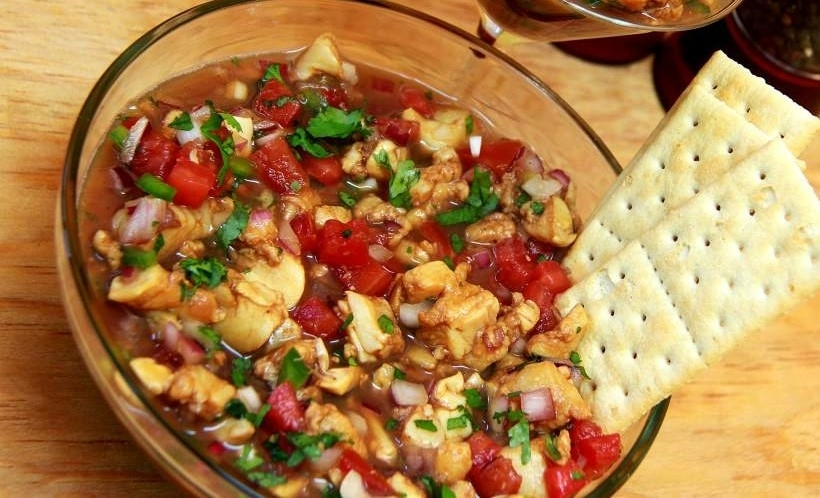
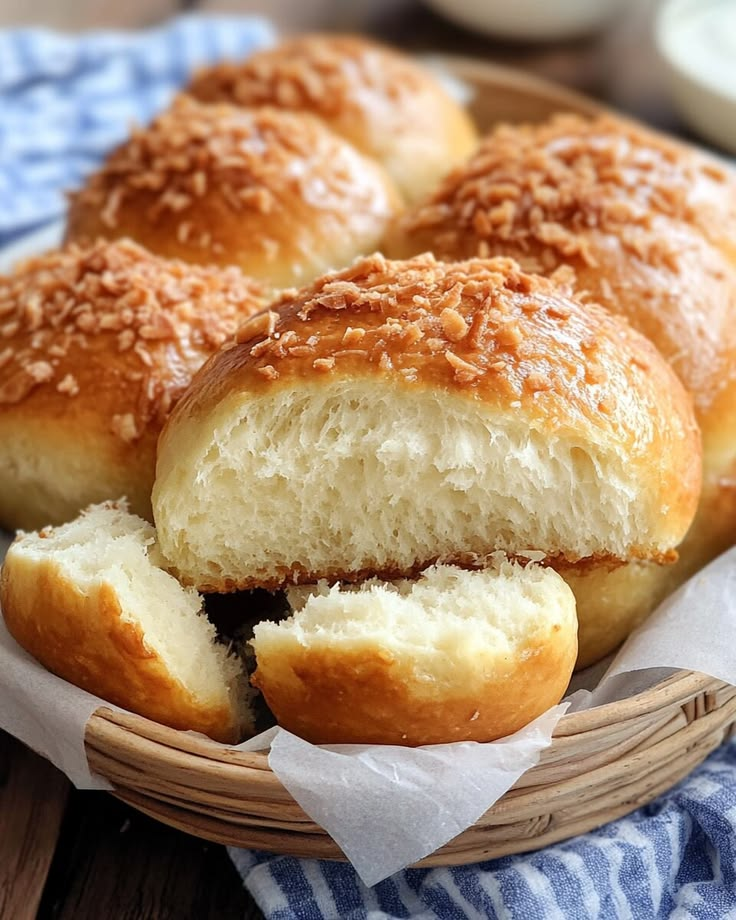
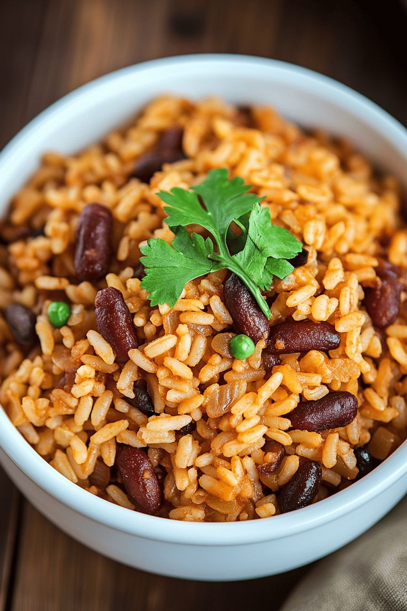
Chetumal es un destino que combina historia, cultura y naturaleza. Ideal para quienes buscan tranquilidad, paisajes caribeños y experiencias auténticas.
¡Ven y descubre la magia del sur de Quintana Roo!
Visitar Chetumal es una experiencia única que combina historia, naturaleza y cultura. ¡Te esperamos!